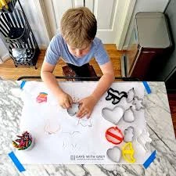

Cookie Cutter Toys
Best cookie Cutter Designs
Pair with our Cookie Cutters for enhanced learning.
Explore our collection of educational cookie cutters ...
Educational Play with Alphabet Cookie Cutters
Alphabet cookie cutters are a fantastic tool for early literacy. They provide a hands-on way for children to learn letters and start forming words.
- Letter Recognition
- Spelling Practice
- Phonics Learning
Animal Cookie Cutters: Exploring the Animal Kingdom
Animal cookie cutters are perfect for teaching children about different animals. Whether it's a lion, a dinosaur, or a butterfly, each shape can be a starting point for a new lesson.
The Magic of Cookie Cutter Toys: Fun and Learning Combined
Introduction
Cookie cutter toys are more than just tools for baking; they are gateways to a world of creativity and learning for children. These delightful toys come in various shapes, including animals, alphabets, and more, making them perfect for sparking imagination and educational play. In this article, we will explore the benefits of cookie cutter toys and how they can make learning enjoyable for kids.
The Joy of Shapes and Colors
One of the most appealing aspects of cookie cutter toys is their variety. From animals like lions and elephants to letters of the alphabet, these toys come in all shapes and sizes. This variety not only makes baking fun but also introduces children to different shapes and colors.
Benefits:
- Visual Learning: Children learn to recognize and differentiate between various shapes and colors.
- Fine Motor Skills: Handling cookie cutters helps improve hand-eye coordination and dexterity.
Activities:
- Letter Recognition: Kids can use alphabet cookie cutters to identify and name each letter.
- Spelling Practice: Forming simple words with cookie dough can make spelling practice fun and interactive.
- Phonics: Parents can use the shapes to teach the sounds each letter makes.
Animal Cookie Cutters: Exploring the Animal Kingdom
Animal cookie cutters are perfect for teaching children about different animals. Whether it's a lion, a dinosaur, or a butterfly, each shape can be a starting point for a new lesson.
Activities:
- Animal Identification: Kids can learn the names and characteristics of various animals.
- Storytelling: Encourage children to create stories involving the animals they cut out.
- Habitat Exploration: Discuss where each animal lives and what it eats.
Holiday-Themed Cookie Cutters: Celebrating Seasons and Traditions
Holiday-themed cookie cutters, such as Christmas trees, Easter eggs, and Halloween pumpkins, add a festive touch to learning. They can be used to teach children about different holidays and traditions.
Activities:
- Holiday Crafts: Use cookie cutters to create holiday-themed crafts and decorations.
- Cultural Education: Discuss the significance of each holiday and how it is celebrated around the world.
- Seasonal Baking: Involve kids in baking holiday treats, making the learning experience delicious and memorable.
Custom Cookie Cutters: Unleashing Creativity
Custom cookie cutters allow for endless creativity. Children can design their own shapes or choose from a wide range of unique designs.
Activities:
- Design Your Own: Kids can draw their own shapes and have them made into cookie cutters.
- Creative Baking: Use custom shapes to create themed cookies for parties or special occasions.
- Art Projects: Incorporate cookie cutter shapes into art projects, such as painting or clay modeling.
The Importance of Play in Learning
Play is a crucial part of a child's development. It helps them learn new skills, express themselves, and understand the world around them. Cookie cutter toys combine play with learning, making education a fun and engaging process.
Benefits:
- Cognitive Development: Play helps children develop problem-solving skills and critical thinking.
- Social Skills: Baking and crafting with cookie cutters can be a social activity, teaching kids to share and collaborate.
- Emotional Growth: Creative play allows children to express their emotions and build self confidence.
Tips for Parents: Making the Most of Cookie Cutter Toys
Parents can enhance the learning experience by incorporating cookie cutter toys into various activities. Here are some tips to get started:
- Interactive Baking: Involve your child in the baking process, from mixing the dough to cutting out shapes and decorating cookies.
- Themed Learning: Use cookie cutters to create themed lessons, such as a day dedicated to learning about animals or practicing the alphabet.
- Storytime: Combine cookie cutter shapes with storytelling. For example, create a story about a day in the life of a lion while making lion-shaped cookies.
- Craft Projects: Use cookie cutters for non-baking activities, such as tracing shapes onto paper for coloring or using them as stencils for painting.
- Celebrate Achievements: Praise your child's efforts and creations, whether it's a perfectly cut cookie or a beautifully decorated one.
Conclusion
Cookie cutter toys are a wonderful addition to any child's playtime. They offer a unique blend of fun and education, helping children learn new things in an enjoyable manner. With their wide variety of shapes and endless possibilities for creative play, cookie cutter toys are sure to be a hit with kids and parents alike. So, the next time you're looking for a fun and educational activity, reach for those cookie cutters and let the learning begin.